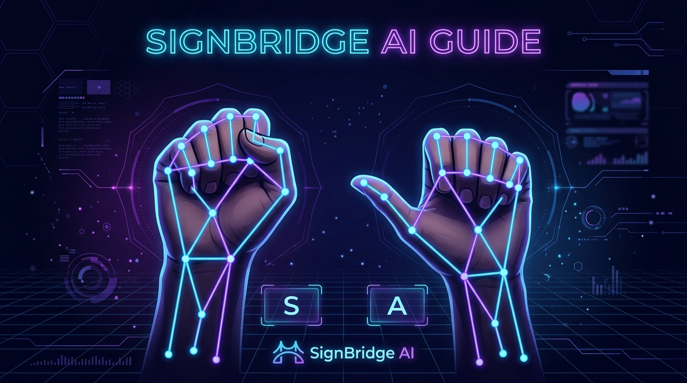

راهنمای جامع نحوه اجرای صحیح ۱۲ علامت اصلی برای تشخیص بلادرنگ توسط هوش مصنوعی

پردازش ۲۱ مفصل سهبعدی دست در کمتر از ۰.۱ میلیثانیه بدون ارسال تصویر به اینترنت
فیلتر لرزش فریمها با استیتماشین ۴ مرحلهای جهت جلوگیری از تکرار اشتباه کلمات
تبدیل فوری جملات ساختهشده به صدای واضح انسانی با استانداردهای کامل دسترسیپذیری
حرکت دست باز از کنار پیشانی به سمت بیرون (مشابه ادای احترام)
فرم دست باز (Flat-B Hand): هر ۴ انگشت (اشاره، میانی، حلقه و کوچک) کاملاً صاف، کشیده و به هم چسبیدهاند. انگشت شست به صورت طبیعی در کنار دست باز است.
رو به وبکم / مخاطب، با زاویه کمی مایل به بالا.
حرکت دست از نزدیکی چانه به سمت جلو و مخاطب
دست کاملاً صاف و باز با انگشتان چسبیده به هم. نوک انگشتان ابتدا نزدیک چانه/لبها قرار دارد و سپس با متانت به سمت جلو و مخاطب امتداد مییابد.
در شروع رو به چانه و در امتداد به سمت جلو و کمی بالا رو به مخاطب.
تکان دادن آرام مشت از مچ به بالا و پایین (مشابه تایید سر)
فرم مشت بسته (S-fist): تمام ۴ انگشت کاملاً در کف دست خم شده و جمع شدهاند. انگشت شست به صورت افقی روی انگشتان خمیده قرار گرفته است.
مشت بسته مستقیم رو به وبکم / جلو.
ضربه زدن و بستن دو انگشت اشاره و میانی به نوک انگشت شست
فرم منقار پرنده: انگشتان حلقه و کوچک کاملاً مشت و خمیده در کف دست هستند. دو انگشت اشاره و میانی باز شده و نوک آنها به نوک شست میچسبد.
رو به وبکم یا کمی با زاویه به سمت چپ/راست.
چرخش ملایم و دایرهای کف دست روی مرکز قفسه سینه
فرم دست باز (Flat-B): کف دست کاملاً صاف، چهار انگشت به هم پیوسته و روی مرکز قفسه سینه قرار میگیرند و حرکتی آرام به صورت دایرهای روی سینه انجام میدهند.
کف دست مستقیم رو به قفسه سینه (پشت دست رو به دوربین).
دست مشت شده با شست بالا روی کف دست دیگر قرار گرفته و به بالا برده میشود
علامت لایک (Thumbs-Up / A-fist): تمام ۴ انگشت محکم مشت شدهاند و انگشت شست به صورت عمودی و مستقیم رو به بالا اشاره میکند.
شست مستقیم رو به بالا، بند انگشتان مشت شده به سمت طرفین.
دست صاف و عمودی در برابر دوربین قرار میگیرد
کف دست کاملاً باز و سفت، انگشتان صاف رو به بالا و کف دست با زاویه قائمه رو به دوربین است. در فرم سنتی دو دستی، لبه این دست عمودی بر کف دست افقی دیگر ضربه میزند.
مستقیم و صریح رو به وبکم.
دست از چانه به سمت جلو و پایین آمده و کف دست رو به بالا قرار میگیرد
دست صاف با انگشتان چسبیده به هم ابتدا چانه را لمس میکند و سپس به سمت جلو متمایل شده، طوری که کف دست رو به بالا قرار میگیرد.
کف دست متمایل به سمت بالا و جلو (رو به آسمان).
دست از چانه جدا شده و کف دست به سمت پایین چرخیده و دور میشود
دست صاف ابتدا چانه را لمس میکند، سپس دست میچرخد تا کف دست رو به پایین قرار گیرد و با یک حرکت رو به بیرون از بدن دور میشود.
کف دست رو به زمین (پایین) و زاویهدار به سمت بیرون.
دو انگشت اشاره و میانی به صورت متقاطع روی دو انگشت دست دیگر ضربه میزنند
فرم حرف H در ASL: دو انگشت اشاره و میانی کاملاً صاف و چسبیده به هم به سمت جلو امتداد دارند. انگشت شست روی دو انگشت حلقه و کوچک قرار دارد تا آنها را بسته نگه دارد.
لبه انگشتان یا کف دست متمایل به سمت داخل/مخاطب.
اشاره مستقیم به سمت مرکز قفسه سینه خودتان
دست مشت است و فقط انگشت اشاره کشیده و باز است. نوک انگشت اشاره مستقیم به سمت سینه خودتان خم شده و اشاره میکند.
نوک انگشت اشاره رو به بدن و عقب (محور Z مثبت).
اشاره مستقیم به سمت طرف مقابل یا لنز وبکم
دست مشت است و فقط انگشت اشاره کاملاً باز و مستقیم به سمت وبکم و مخاطب نشانه رفته است (سایر انگشتان با شست مهار شدهاند).
نوک انگشت اشاره مستقیم رو به وبکم و جلو (محور Z منفی).
این جدول را میتوانید همیشه در کنار مانیتور هنگام استفاده از وبکم مرور کنید.
با اجرای دستور npm run dev در پوشه frontend، داشبورد وب باز میشود. وبکم را روشن کنید و هر یک از این فرمها را روبروی دوربین بگیرید. نوار اطمینان سبز رنگ فعال شده و کلمه به بافر متن اضافه میگردد.